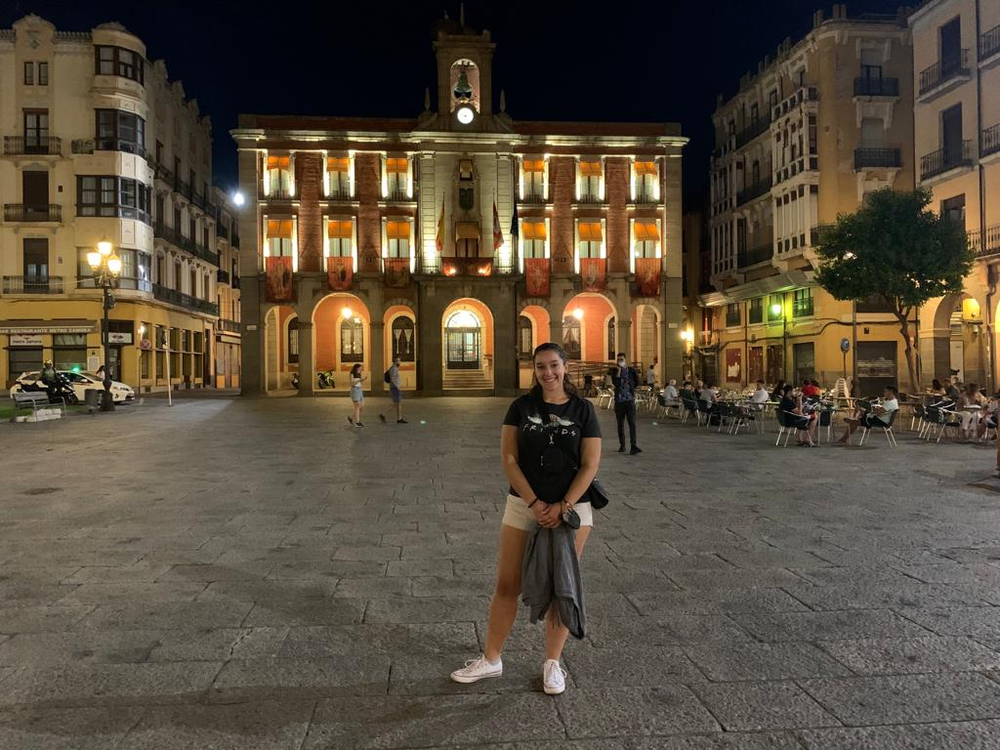

Red Social
Sara María Ramírez Pérez
Nacimiento: 2001-04-29, Avilés
- Latitud: 43.55205777798353
- Longitud: -5.936102335619281
- Altitud: 26 m
Residencia: Avilés
- Latitud: 43.55539516182748
- Longitud: -5.922366444815168
- Altitud: 22 m
Flautista y pianista
Fotos de Sara María Ramírez Pérez

Videos de Sara María Ramírez Pérez
Silvia Suárez Prendes
Nacimiento: 2001-02-27, Pravia
- Latitud: 43.48758492992525
- Longitud: -6.113178509202413
- Altitud: 57 m
Residencia: La Arena
- Latitud: 43.55789427316034
- Longitud: -6.075515880166677
- Altitud: 8 m
Le gusta cantar
Fotos de Silvia Suárez Prendes

Celia Melendi Lavandera
Nacimiento: 2001-09-01, Oviedo
- Latitud: 43.37602335482933
- Longitud: -5.826971044800217
- Altitud: 166 m
Residencia: Pola de Siero
- Latitud: 43.391954193048434
- Longitud: -5.663191627791036
- Altitud: 258 m
Le gusta dibujar y escribir
Fotos de Celia Melendi Lavandera

Iván Vega García
Nacimiento: 2001-03-06, Avilés
- Latitud: 43.55205777798353
- Longitud: -5.936102335619281
- Altitud: 26 m
Residencia: Avilés
- Latitud: 43.56236142960182
- Longitud: -5.926744769381713
- Altitud: 27 m
Practica capoeira
Fotos de Iván Vega García

Elena Selgas Fernández
Nacimiento: 2001-12-02, Pravia
- Latitud: 43.4880297103507
- Longitud: -6.113777037769097
- Altitud: 57 m
Residencia: Lugo
- Latitud: 43.006172367015694
- Longitud: -7.558507437897362
- Altitud: 454 m
Estudia nutrición
Fotos de Elena Selgas Fernández

Laura Gómez Menéndez
Nacimiento: 2001-01-01, Tebongo
- Latitud: 43.23860446899653
- Longitud: -6.502905988432673
- Altitud: 523 m
Residencia: Oviedo
- Latitud: 43.36477581220521
- Longitud: -5.858897926390938
- Altitud: 242 m
Le encantan los unicornios
Fotos de Laura Gómez Menéndez

Miguel Gayol Pertierra
Nacimiento: 2001-05-25, Oviedo
- Latitud: 43.37602335482933
- Longitud: -5.826971044800217
- Altitud: 166 m
Residencia: La Florida
- Latitud: 43.367810861051794
- Longitud: -5.874070632221418
- Altitud: 242 m
Erasmus en Malta
Fotos de Miguel Gayol Pertierra

Luis Sánchez de Posada Orihuela
Nacimiento: 2001-08-25, Oviedo
- Latitud: 43.37602335482933
- Longitud: -5.826971044800217
- Altitud: 166 m
Residencia: Montecerrao
- Latitud: 43.35127579914649
- Longitud: -5.8639465308722265
- Altitud: 242 m
Toca la guitarra
Fotos de Luis Sánchez de Posada Orihuela

Jairo Castro García
Nacimiento: 2000-12-02, Luarca
- Latitud: 43.54528931048142
- Longitud: -6.537775396528275
- Altitud: 0 m
Residencia: La Corredoria
- Latitud: 43.38906023231635
- Longitud: -5.822732215381706
- Altitud: 166 m
Becario
Fotos de Jairo Castro García

Olaya López Muñoz
Nacimiento: 1999-06-25, Torrelavega
- Latitud: 43.34669279059895
- Longitud: -4.050255805933801
- Altitud: 37 m
Residencia: Avilés
- Latitud: 43.55961055998111
- Longitud: -5.935794717770648
- Altitud: 27 m
Su hobbie es la fotografía
Fotos de Olaya López Muñoz

Kike Arango Rodríguez
Nacimiento: 1997-03-08, Luanco
- Latitud: 43.61141345763119
- Longitud: -5.793418152345481
- Altitud: 56 m
Residencia: Busto
- Latitud: 43.59514372868105
- Longitud: -5.83016168210446
- Altitud: 56 m
Le apasionan las motos
Fotos de Kike Arango Rodríguez

Isabel Macho de Cos
Nacimiento: 1999-05-26, Torrelavega
- Latitud: 43.34784927362506
- Longitud: -4.0532922218672525
- Altitud: 37 m
Residencia: Oviedo
- Latitud: 43.353992964099206
- Longitud: -5.850412552325025
- Altitud: 242 m
Pedagoga
Fotos de Isabel Macho de Cos

Alex Caso Díaz
Nacimiento: 2000-11-03, El Entrego
- Latitud: 43.287666968492005
- Longitud: -5.63456233512747
- Altitud: 498 m
Residencia: El Entrego
- Latitud: 43.28760384271391
- Longitud: -5.641638742214042
- Altitud: 498 m
Aficionado a la F1
Fotos de Alex Caso Díaz